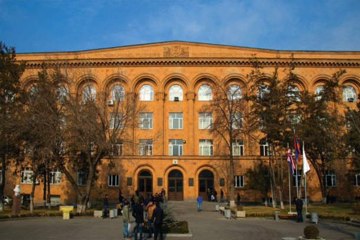

POLYTECHNIC WORLD
Polytechnic universities around the world represent innovation, engineering excellence, and the future of technology. From Armenia to Europe and beyond, these institutions shape generations of engineers, developers, and scientists.

Armenia - NPUA
The National Polytechnic University of Armenia is one of the most important technical institutions in the country. It provides strong education in engineering, IT, and applied sciences.
Students gain both theoretical knowledge and real-world skills through laboratories, research centers, and international collaborations. The university plays a key role in Armenia’s technological development.
Europe Polytechnics
European polytechnic universities are known for their innovation and strong research systems. Countries like Germany, France, and Portugal have institutions that lead in engineering and industrial design.
These universities often collaborate globally, offering students exchange programs, modern labs, and direct connections with industry leaders.
Future of Polytechnic Education
Polytechnic education is evolving with technology. Artificial intelligence, robotics, and data science are becoming essential parts of modern engineering.
Universities are adapting by creating innovative programs and encouraging students to think creatively, solve real-world problems, and build the future.